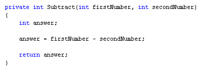
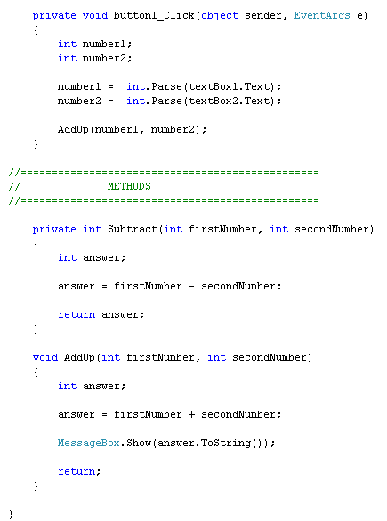
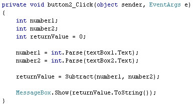
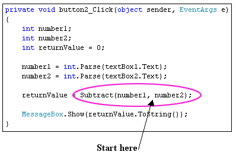
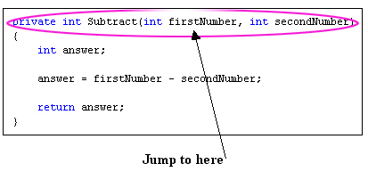
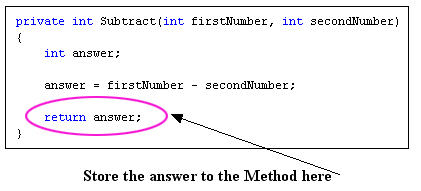
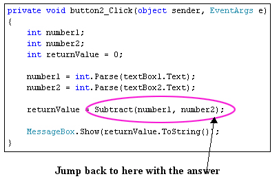
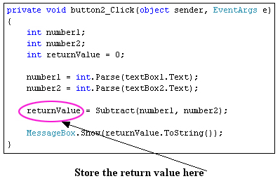

Getting values back from C# Methods
<< Continues from the previous lesson
The Method we set up used the keyword void. We used void because we didn't want anything back from the Method. But quite often you will want something back from your Methods.
What we'll do now is to use the Subtract button and deduct one text box number from the other. We'll set up another Method called Subtract. This time, we'll set it up so as to return an answer.
If you want to return a value from your Methods, you can't use the keyword void. Simply because void means "Don't return an answer". Instead of using void, we'll use the keyword int.
Add the following Method to your code, either above or below the AddUp Method:

If you add a few comments, your coding window should look like ours:

So we have one button and two Methods. Before we explain the new Method, double click the Subtract button on your form to get at its code. Then add the following:

We'll explain how this button code works in a moment. But run your programme and you should see a message box appear when you click your Subtract button. Hopefully it will have the right answer!
Now have a look at the first line of the new Method:
private int Subtract( int firstNumber, int secondNumber)
The part in round brackets is exactly the same as before, and works the same way - set up the Method to accept two integer values. What's new is this part:
private int Subtract
Subtract is just the name of the Method, something we came up with ourselves. Before the Method name, however, we have two new keywords - private and int.
What we want our Method to do is to bring back the answer to our subtraction. The answer will obviously be a number. And that's why int comes before the Method name: we want the answer to the Subtract Method to be an integer. If you want to return values from your Methods they need what's called a return type. This is a variable like int, float, string, bool, etc. What you're telling C# to do is to return an int (or a bool, or a float).
Have a look at the whole Method again:
Notice the final line:
return answer;
This means, "return whatever is inside of the variable called answer."
But where is C# returning to? Here's the code for the Subtract button again. The important line is in blue bold below:
private void button2_Click(object sender, EventArgs e)
{
int number1;
int number2;
int returnValue = 0;
number1 = int.Parse(textBox1.Text);
number2 = int.Parse(textBox2.Text);
returnValue = Subtract(number1, number2);
MessageBox.Show(returnValue.ToString());
}
When you click the button on the form, C# moves down line by line. When it gets to this line:
returnValue = Subtract( number1, number2 );
it will trot off and locate the Method called Subtract. It will then try to work out the code for the Method. Once it has an answer, it comes back to the same place. We have the call to the Method after an equals sign. Before the equals sign we have a new integer variable, which we've called returnValue. C# will store the answer to the Subtract Method inside of this returnValue variable. In other words, it's just like a normal variable assignment: work out the answer on the right of the equals sign, and store it on the left. In case that's not clear, these diagrams may help:





After those steps, C# then drops down to the next line, which for us is a message box.
It can be tricky trying to follow what the method is doing, and what gets passed
back. But just remember these points:
- To set up a Method that returns a value, use a return type like int, float, bool, string, etc
- Use the keyword return, followed by the answer you want to have passed back
- Store the answer to your Method in another variable, which should come before an equals sign
One thing we haven't explained is why we started our Method with the word private.
Private refers to which other code has access to the Method. By using the private keyword you're telling C# that the Method can't be seen outside of this particular class. The class in question is the one at the top of the code, for the form. This one:
public partial class Form1 : Form
An alternative to private is public, which means it can be seen outside of a particular class or method. (There's also a keyword called static, which we'll cover later in the course.)
We'll leave Methods for now. But we'll be using them a lot for the rest of this book! To help your understanding of the topic, try this exercise.
Exercise J
Add two more Methods to your code, one to Multiply, and one to Divide. Add code
to your Multiply and Divide buttons that uses your new Methods. When you run
your programme, all four buttons should work.
In the next section, we'll move on and take a look at Arrays